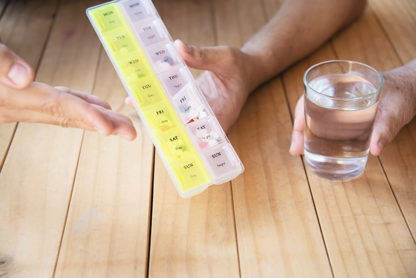
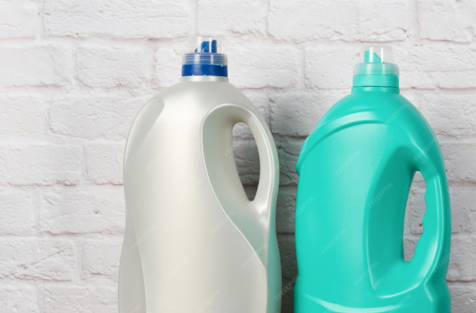
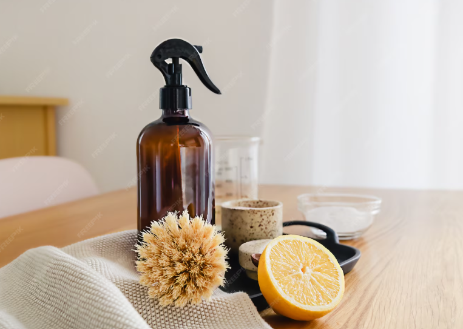

TIPS MENCUCI
Cara Mudah Memisahkan Pakaian Sebelum Dicuci
Memisahkan pakaian sebelum dicuci sangat penting untuk menjaga warna tetap cerah, mencegah luntur, dan membuat pakaian lebih awet. Langkah pertama adalah memisahkan pakaian berdasarkan warna: kelompokkan pakaian putih, pakaian berwarna cerah, dan pakaian berwarna gelap agar tidak saling menodai selama proses pencucian. Setelah itu, pisahkan juga berdasarkan jenis kain. Kain halus seperti pakaian dalam, hijab, satin, atau kaus tipis sebaiknya dicuci terpisah atau dimasukkan ke dalam laundry bag, sedangkan kain tebal seperti jeans, jaket, dan handuk dicuci bersama karena membutuhkan putaran lebih kuat
1 Nov 2025
5 menit baca
MENGHILANGKAN NODA
Trik Ampuh Menghilangkan Noda Membandel
Menghilangkan noda membandel bisa dilakukan dengan bahan sederhana yang ada di rumah. Untuk noda minyak, gunakan bedak bayi atau sabun cuci piring yang mampu memecah lemak. Noda tinta dapat dihilangkan dengan alkohol atau hand sanitizer yang ditepuk perlahan hingga warna memudar. Noda darah paling efektif dibersihkan dengan air dingin lalu diberi garam atau hydrogen peroxide. Jika terkena kopi atau teh, rendam area noda dengan air hangat bercampur deterjen sebelum digosok pelan. Noda saus cukup dikikis dulu sisa yang menempel lalu diberi sabun cair. Untuk noda kuning di ketiak, gunakan pasta baking soda dan sikat lembut.
28 Okt 2025
7 menit baca
PERAWATAN
Merawat Pakaian Berbahan Khusus
Pakaian berbahan khusus seperti sutra, wol, satin, atau linen perlu perlakuan lembut agar tetap awet. Cuci dengan tangan atau gunakan mode delicate pada mesin cuci, lalu pakai deterjen yang memang aman untuk kain halus. Hindari memeras terlalu kuat karena bisa merusak serat kain. Untuk pengeringan, cukup jemur di tempat teduh dan biarkan kering alami—jangan dijemur langsung di bawah matahari agar warna tidak pudar. Saat menyetrika, gunakan suhu rendah dan setrika dari bagian dalam kain. Simpan pakaian dengan cara digantung atau dilipat rapi agar bentuknya tetap terjaga.
25 Okt 2025
6 menit baca

TIPS MENCUCI
Suhu Air yang Tepat untuk Setiap Jenis Pakaian
Memilih suhu air yang tepat sangat penting agar pakaian tetap awet dan bersih. Air dingin cocok untuk pakaian gelap atau kain halus seperti sutra dan satin karena mencegah warna luntur dan kain menyusut. Air hangat ideal untuk pakaian katun atau linen sehari-hari, membantu noda ringan terangkat lebih mudah. Sedangkan air panas sebaiknya digunakan hanya untuk pakaian putih, handuk, atau sprei yang sangat kotor, karena efektif membersihkan dan membunuh bakteri, tapi bisa merusak kain halus dan membuat warna cepat pudar.
22 Okt 2025
4 menit baca
PENYIMPANAN
Cara Menyimpan Pakaian di Lemari
Pakaian sebaiknya disimpan sesuai jenis dan frekuensi pemakaian. Pakaian yang mudah kusut atau halus, seperti kemeja, blus, dan sutra, sebaiknya digantung menggunakan hanger agar bentuknya tetap rapi. Pakaian tebal seperti sweater, jaket, atau jeans lebih baik dilipat agar tidak merusak hanger dan tidak meregang. Pisahkan pakaian menurut kategori, misalnya baju kerja, baju santai, dan pakaian musim dingin, sehingga mudah dicari. Simpan juga pakaian yang jarang dipakai
20 Okt 2025
5 menit baca
PERAWATAN
Mencegah Pakaian Luntur dan Pudar
ntuk menjaga warna pakaian tetap cerah, cuci pakaian berwarna terpisah dari pakaian putih atau terang, terutama pada 1–2 kali pencucian pertama. Gunakan air dingin atau hangat, bukan panas, karena air panas mempercepat luntur warna. Pilih deterjen yang lembut dan khusus untuk pakaian berwarna, serta hindari penggunaan pemutih berbasis klorin. Balikkan pakaian saat mencuci dan menjemur agar bagian luar tidak langsung terpapar gesekan dan sinar matahari. Saat menjemur, letakkan di tempat teduh untuk mencegah warna pudar.
18 Okt 2025
6 menit baca
MENGHILANGKAN NODA
Mengatasi Noda Kopi dan Teh
Noda kopi dan teh sebaiknya segera ditangani agar tidak menempel permanen. Pertama, bilas noda dengan air dingin atau hangat untuk mengurangi sisa minuman yang terserap kain. Selanjutnya, oleskan sedikit deterjen cair atau sabun pada noda dan gosok perlahan. Untuk noda membandel, rendam pakaian dalam campuran air hangat dan sedikit baking soda atau deterjen selama 15–30 menit sebelum dicuci. Setelah itu, cuci seperti biasa. Menangani noda segera dan tidak menunggu terlalu lama akan membuat noda kopi dan teh lebih mudah hilang tanpa merusak kain.
15 Okt 2025
4 menit baca

TIPS MENCUCI
Memilih Deterjen yang Tepat
Memilih deterjen yang sesuai penting agar pakaian bersih maksimal tanpa merusak kain. Untuk pakaian berwarna, pilih deterjen khusus warna agar warna tidak cepat pudar. Pakaian putih atau sangat kotor bisa menggunakan deterjen dengan pemutih aman untuk menjaga kecerahan. Untuk kain halus seperti sutra, satin, atau wol, gunakan deterjen lembut atau deterjen khusus pakaian halus agar serat kain tidak rusak. Selain itu, perhatikan juga bentuk deterjen—cair, bubuk, atau kapsul—sesuai kebutuhan dan jenis mesin cuci. Dengan memilih deterjen yang tepat, pakaian lebih awet, bersih, dan warnanya tetap terjaga.
12 Okt 2025
5 menit baca

PENYIMPANAN
Cara Alami Membuat Pakaian Wangi Tahan Lama
Untuk membuat pakaian harum tanpa bahan kimia berlebihan, kamu bisa memanfaatkan bahan alami. Tambahkan beberapa tetes essential oil seperti lavender, lemon, atau tea tree ke dalam air bilasan terakhir saat mencuci. Gunakan juga air cuka putih (sekitar ½ cangkir) saat membilas pakaian untuk menetapkan aroma dan melembutkan kain. Jemur pakaian di tempat teduh agar wangi tidak cepat hilang karena sinar matahari langsung. Setelah kering, simpan pakaian bersama potpourri, daun lavender, atau baking soda di lemari untuk menjaga aroma tetap segar.
10 Okt 2025
6 menit baca